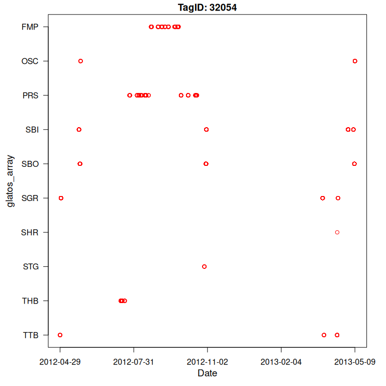

Overview
glatos is an R package with functions useful to members of the Great Lakes Acoustic Telemetry Observation System https://glatos.org. Functions may be generally useful for processing, analyzing, simulating, and visualizing acoustic telemetry data, but are not strictly limited to acoustic telemetry applications. glatos is hosted by the Ocean Tracking Network on github.
Getting started
If you are just getting started with glatos, we recommend checking out the vignettes and package examples (see below). Other resources can be found on the glatos webpage (https://glatos.org).
Contributing
We are always looking for new contributors or new ideas! See CONTRIBUTING.md
To report a bug, ask a question, or propose something new, submit an Issue or email the maintainer (Chris Holbrook): cholbrook@glfc.org.
Installation
- To install the latest release (0.9.8 ‘pretty-fragrant-rye’):
if (!require("pak")) {
install.packages("pak")
}
pak::pak("ocean-tracking-network/glatos")- To install the development version, an earlier version, or to see frequently asked questions about installation, see install
Data loading and processing
Read glatos detection export file
library(glatos)
# load example file
det_file <- system.file("extdata", "walleye_detections.csv", package = "glatos")
# read glatos detections
head(read_glatos_detections(det_file)) animal_id detection_timestamp_utc glatos_array station_no
1 153 2012-04-29 01:48:37 TTB 2
2 153 2012-04-29 01:52:55 TTB 2
3 153 2012-04-29 01:55:12 TTB 2
4 153 2012-04-29 01:56:42 TTB 2
5 153 2012-04-29 01:58:37 TTB 2
6 153 2012-04-29 02:01:22 TTB 2
transmitter_codespace transmitter_id sensor_value sensor_unit deploy_lat
1 A69-9001 32054 NA <NA> 43.39165
2 A69-9001 32054 NA <NA> 43.39165
3 A69-9001 32054 NA <NA> 43.39165
4 A69-9001 32054 NA <NA> 43.39165
5 A69-9001 32054 NA <NA> 43.39165
6 A69-9001 32054 NA <NA> 43.39165
deploy_long receiver_sn tag_type tag_model tag_serial_number common_name_e
1 -83.99264 113213 <NA> <NA> <NA> walleye
2 -83.99264 113213 <NA> <NA> <NA> walleye
3 -83.99264 113213 <NA> <NA> <NA> walleye
4 -83.99264 113213 <NA> <NA> <NA> walleye
5 -83.99264 113213 <NA> <NA> <NA> walleye
6 -83.99264 113213 <NA> <NA> <NA> walleye
capture_location length weight sex release_group release_location
1 Tittabawassee River 0.565 NA F <NA> Tittabawassee
2 Tittabawassee River 0.565 NA F <NA> Tittabawassee
3 Tittabawassee River 0.565 NA F <NA> Tittabawassee
4 Tittabawassee River 0.565 NA F <NA> Tittabawassee
5 Tittabawassee River 0.565 NA F <NA> Tittabawassee
6 Tittabawassee River 0.565 NA F <NA> Tittabawassee
release_latitude release_longitude utc_release_date_time
1 NA NA 2012-03-20 20:00:00
2 NA NA 2012-03-20 20:00:00
3 NA NA 2012-03-20 20:00:00
4 NA NA 2012-03-20 20:00:00
5 NA NA 2012-03-20 20:00:00
6 NA NA 2012-03-20 20:00:00
glatos_project_transmitter glatos_project_receiver glatos_tag_recovered
1 HECWL HECWL NO
2 HECWL HECWL NO
3 HECWL HECWL NO
4 HECWL HECWL NO
5 HECWL HECWL NO
6 HECWL HECWL NO
glatos_caught_date station min_lag
1 <NA> TTB-002 258
2 <NA> TTB-002 137
3 <NA> TTB-002 90
4 <NA> TTB-002 90
5 <NA> TTB-002 115
6 <NA> TTB-002 145Read basin-wide receiver location file
# extract path to example file in glatos package
rec_file <- system.file("extdata", "sample_receivers.csv", package = "glatos")
# read file and display first 5 rows
head(read_glatos_receivers(rec_file)) station glatos_array station_no consecutive_deploy_no intend_lat intend_long
1 WHT-009 WHT 9 1 NA NA
2 FDT-001 FDT 1 2 NA NA
3 FDT-004 FDT 4 2 NA NA
4 FDT-003 FDT 3 2 NA NA
5 FDT-002 FDT 2 2 NA NA
6 DTR-001 DTR 1 2 NA NA
deploy_lat deploy_long recover_lat recover_long deploy_date_time
1 43.74216 -82.50791 NA NA 2010-09-22 18:05:00
2 45.93014 -83.50204 NA NA 2010-11-12 15:07:00
3 45.94764 -83.48847 NA NA 2010-11-12 15:36:00
4 45.93794 -83.46884 NA NA 2010-11-12 15:56:00
5 45.92377 -83.48483 NA NA 2010-11-12 16:26:00
6 45.97745 -83.89740 NA NA 2010-11-12 19:43:00
recover_date_time bottom_depth riser_length instrument_depth ins_model_no
1 2012-08-15 16:52:00 NA NA NA VR2W
2 2012-05-15 13:25:00 NA NA NA VR3
3 2012-05-15 14:15:00 NA NA NA VR3
4 2012-05-15 14:40:00 NA NA NA VR3
5 2012-05-15 16:10:00 NA NA NA VR3
6 2012-05-10 15:49:00 NA NA NA VR3
glatos_ins_frequency ins_serial_no deployed_by comments glatos_seasonal
1 69 109450 NO
2 69 442 No
3 69 441 No
4 69 444 No
5 69 447 No
6 69 439 No
glatos_project glatos_vps
1 HECWL NO
2 DRMLT No
3 DRMLT No
4 DRMLT No
5 DRMLT No
6 DRMLT NoRead glatos submission workbook
# get packaged example workbook
wb2_file <- system.file("extdata", "walleye_workbook.xlsx", package = "glatos")
# read file
# output is a list of three tables- metadata, animals, receivers
wb2 <- read_glatos_workbook(wb2_file)
# Metadata table
head(wb2$metadata)$project_code
[1] "HECWL"
$principle_investigator
[1] "PI"
$pi_email
[1] "thayden@usgs.gov"
$source_file
[1] "walleye_workbook.xlsx"
$wb_version
[1] "1.4"
$created
[1] "2026-07-23 15:31:36 EDT"
# Animals table
head(wb2$animals) animal_id tag_type tag_manufacturer tag_model tag_serial_number tag_id_code
1 120 <NA> VEMCO V16-4x 1106553 32024
2 107 <NA> VEMCO V16-4x 1106541 32012
3 109 <NA> VEMCO V16-4x 1106543 32014
4 115 <NA> VEMCO V16-4x 1106549 32020
5 124 <NA> VEMCO V16-4x 1106557 32028
6 68 <NA> VEMCO V16-4x 1106507 31978
tag_code_space tag_implant_type tag_activation_date est_tag_life tagger
1 A69-9001 internal <NA> 1338 <NA>
2 A69-9001 internal <NA> 1338 <NA>
3 A69-9001 internal <NA> 1338 <NA>
4 A69-9001 internal <NA> 1338 <NA>
5 A69-9001 internal <NA> 1338 <NA>
6 A69-9001 internal <NA> 1338 <NA>
tag_owner_pi tag_owner_organization common_name_e scientific_name
1 <NA> <NA> walleye Sander vitreus
2 <NA> <NA> walleye Sander vitreus
3 <NA> <NA> walleye Sander vitreus
4 <NA> <NA> walleye Sander vitreus
5 <NA> <NA> walleye Sander vitreus
6 <NA> <NA> walleye Sander vitreus
capture_location capture_latitude capture_longitude wild_or_hatchery stock
1 Maumee River 41.56093 -83.645 <NA> <NA>
2 Maumee River 41.56093 -83.645 <NA> <NA>
3 Maumee River 41.56093 -83.645 <NA> <NA>
4 Maumee River 41.56093 -83.645 <NA> <NA>
5 Maumee River 41.56093 -83.645 <NA> <NA>
6 Maumee River 41.56093 -83.645 <NA> <NA>
length weight length_type age sex dna_sample_taken treatment_type
1 0.627 NA total 7 F <NA> <NA>
2 0.706 NA total 8 F <NA> <NA>
3 0.615 NA total 12 M <NA> <NA>
4 0.465 NA total 6 M <NA> <NA>
5 0.466 NA total 4 M <NA> <NA>
6 0.460 NA total 4 M <NA> <NA>
release_group release_location release_latitude release_longitude
1 <NA> Maumee 41.56093 -83.645
2 <NA> Maumee 41.56093 -83.645
3 <NA> Maumee 41.56093 -83.645
4 <NA> Maumee 41.56093 -83.645
5 <NA> Maumee 41.56093 -83.645
6 <NA> Maumee 41.56093 -83.645
utc_release_date_time capture_depth temperature_change holding_temperature
1 2011-03-28 04:00:00 NA NA NA
2 2011-03-28 04:01:00 NA NA NA
3 2011-03-28 04:05:00 NA NA NA
4 2011-03-28 04:13:00 NA NA NA
5 2011-03-28 04:27:00 NA NA NA
6 2011-03-28 04:28:00 NA NA NA
surgery_location date_of_surgery surgery_latitude surgery_longitude sedative
1 Maumee <NA> 43.59881 -84.23942 <NA>
2 Maumee <NA> 43.59881 -84.23942 <NA>
3 Maumee <NA> 43.59881 -84.23942 <NA>
4 Maumee <NA> 43.59881 -84.23942 <NA>
5 Maumee <NA> 43.59881 -84.23942 <NA>
6 Maumee <NA> 43.59881 -84.23942 <NA>
sedative_concentration anaesthetic buffer anaesthetic_concentration
1 <NA> <NA> <NA> <NA>
2 <NA> <NA> <NA> <NA>
3 <NA> <NA> <NA> <NA>
4 <NA> <NA> <NA> <NA>
5 <NA> <NA> <NA> <NA>
6 <NA> <NA> <NA> <NA>
buffer_concentration_in_anaesthetic anesthetic_concentration_in_recirculation
1 <NA> <NA>
2 <NA> <NA>
3 <NA> <NA>
4 <NA> <NA>
5 <NA> <NA>
6 <NA> <NA>
buffer_concentration_in_recirculation dissolved_oxygen comments
1 <NA> <NA> <NA>
2 <NA> <NA> <NA>
3 <NA> <NA> <NA>
4 <NA> <NA> <NA>
5 <NA> <NA> <NA>
6 <NA> <NA> <NA>
glatos_project glatos_external_tag_id1 glatos_external_tag_id2
1 HECWL 5017 5016
2 HECWL 5074 5075
3 HECWL 5057 5058
4 HECWL 5060 5061
5 HECWL 5091 5092
6 HECWL 5082 5083
glatos_tag_recovered glatos_caught_date glatos_reward
1 NO <NA> <NA>
2 YES 2013-04-19 <NA>
3 NO <NA> <NA>
4 NO <NA> <NA>
5 NO <NA> <NA>
6 NO <NA> <NA>
# receivers table
head(wb2$receivers) glatos_array glatos_project station_no consecutive_deploy_no ins_serial_no
1 BBI HECWL 5 1 109493
2 BBI HECWL 4 1 109985
3 BBI HECWL 3 1 109908
4 BBI HECWL 2 1 109492
5 FMP HECWL 3 1 109499
6 FMP HECWL 2 1 109509
otn_array mooring_drop_dead_date intend_lat intend_long otn_mission_id
1 <NA> <NA> <NA> <NA> <NA>
2 <NA> <NA> <NA> <NA> <NA>
3 <NA> <NA> <NA> <NA> <NA>
4 <NA> <NA> <NA> <NA> <NA>
5 <NA> <NA> <NA> <NA> <NA>
6 <NA> <NA> <NA> <NA> <NA>
deploy_date_time deploy_lat deploy_long bottom_depth riser_length
1 2010-09-14 15:58:00 45.70701 -84.41849 NA NA
2 2010-09-14 16:11:00 45.69908 -84.41951 NA NA
3 2010-09-14 16:20:00 45.69116 -84.41951 NA NA
4 2010-09-14 16:33:00 45.68316 -84.41941 NA NA
5 2010-09-15 15:30:00 45.50758 -83.90125 NA NA
6 2010-09-15 15:39:00 45.49911 -83.90592 NA NA
instrument_depth checwlk_complete_time status_in ins_model_no
1 NA <NA> <NA> VR2W
2 NA <NA> <NA> VR2W
3 NA <NA> <NA> VR2W
4 NA <NA> <NA> VR2W
5 NA <NA> <NA> VR2W
6 NA <NA> <NA> VR2W
glatos_ins_frequency rcv_modem_address sync_date_time memory_erased_at_deploy
1 69 <NA> <NA> <NA>
2 69 <NA> <NA> <NA>
3 69 <NA> <NA> <NA>
4 69 <NA> <NA> <NA>
5 69 <NA> <NA> <NA>
6 69 <NA> <NA> <NA>
rcv_battery_install_date rcv_expected_battery_life rcv_voltage_at_deploy
1 <NA> <NA> <NA>
2 <NA> <NA> <NA>
3 <NA> <NA> <NA>
4 <NA> <NA> <NA>
5 <NA> <NA> <NA>
6 <NA> <NA> <NA>
rcv_tilt_after_deploy deployed_by comments glatos_seasonal glatos_vps
1 <NA> <NA> <NA> NO NO
2 <NA> <NA> <NA> NO NO
3 <NA> <NA> <NA> NO NO
4 <NA> <NA> <NA> NO NO
5 <NA> <NA> <NA> NO NO
6 <NA> <NA> <NA> NO NO
ar_confirm data_downloaded ins_model_number recovered recover_date_time
1 <NA> <NA> <NA> <NA> 2011-09-16 18:50:00
2 <NA> <NA> <NA> <NA> 2011-09-16 17:00:00
3 <NA> <NA> <NA> <NA> 2011-09-16 18:10:00
4 <NA> <NA> <NA> <NA> 2011-09-16 19:20:00
5 <NA> <NA> <NA> <NA> 2011-07-07 18:10:00
6 <NA> <NA> <NA> <NA> 2011-07-07 17:10:00
recover_lat recover_long location_description water_body
1 NA NA Bois Blanc Island (East line) Lake Huron
2 NA NA Bois Blanc Island (East line) Lake Huron
3 NA NA Bois Blanc Island (East line) Lake Huron
4 NA NA Bois Blanc Island (East line) Lake Huron
5 NA NA off Forty Mile Point Lake Huron
6 NA NA off Forty Mile Point Lake Huron
glatos_region
1 Lake Huron
2 Lake Huron
3 Lake Huron
4 Lake Huron
5 Lake Huron
6 Lake HuronFiltering and summarizing
Identify possible false detections
# get path to example detection file
det_file <- system.file("extdata", "walleye_detections.csv", package = "glatos")
# read detection export file
det <- read_glatos_detections(det_file)
# identify and display possible false detections
det <- false_detections(det, 3600)
head(det) animal_id detection_timestamp_utc glatos_array station_no
1 153 2012-04-29 01:48:37 TTB 2
2 153 2012-04-29 01:52:55 TTB 2
3 153 2012-04-29 01:55:12 TTB 2
4 153 2012-04-29 01:56:42 TTB 2
5 153 2012-04-29 01:58:37 TTB 2
6 153 2012-04-29 02:01:22 TTB 2
transmitter_codespace transmitter_id sensor_value sensor_unit deploy_lat
1 A69-9001 32054 NA <NA> 43.39165
2 A69-9001 32054 NA <NA> 43.39165
3 A69-9001 32054 NA <NA> 43.39165
4 A69-9001 32054 NA <NA> 43.39165
5 A69-9001 32054 NA <NA> 43.39165
6 A69-9001 32054 NA <NA> 43.39165
deploy_long receiver_sn tag_type tag_model tag_serial_number common_name_e
1 -83.99264 113213 <NA> <NA> <NA> walleye
2 -83.99264 113213 <NA> <NA> <NA> walleye
3 -83.99264 113213 <NA> <NA> <NA> walleye
4 -83.99264 113213 <NA> <NA> <NA> walleye
5 -83.99264 113213 <NA> <NA> <NA> walleye
6 -83.99264 113213 <NA> <NA> <NA> walleye
capture_location length weight sex release_group release_location
1 Tittabawassee River 0.565 NA F <NA> Tittabawassee
2 Tittabawassee River 0.565 NA F <NA> Tittabawassee
3 Tittabawassee River 0.565 NA F <NA> Tittabawassee
4 Tittabawassee River 0.565 NA F <NA> Tittabawassee
5 Tittabawassee River 0.565 NA F <NA> Tittabawassee
6 Tittabawassee River 0.565 NA F <NA> Tittabawassee
release_latitude release_longitude utc_release_date_time
1 NA NA 2012-03-20 20:00:00
2 NA NA 2012-03-20 20:00:00
3 NA NA 2012-03-20 20:00:00
4 NA NA 2012-03-20 20:00:00
5 NA NA 2012-03-20 20:00:00
6 NA NA 2012-03-20 20:00:00
glatos_project_transmitter glatos_project_receiver glatos_tag_recovered
1 HECWL HECWL NO
2 HECWL HECWL NO
3 HECWL HECWL NO
4 HECWL HECWL NO
5 HECWL HECWL NO
6 HECWL HECWL NO
glatos_caught_date station min_lag passed_filter
1 <NA> TTB-002 258 1
2 <NA> TTB-002 137 1
3 <NA> TTB-002 90 1
4 <NA> TTB-002 90 1
5 <NA> TTB-002 115 1
6 <NA> TTB-002 145 1Classify discrete events in detection data
# get path to example detection file
det_file <- system.file("extdata", "walleye_detections.csv", package = "glatos")
# read detection export file
det <- read_glatos_detections(det_file)
# extract events
head(detection_events(det)) event animal_id location mean_latitude mean_longitude first_detection
1 1 153 TTB 43.38991 -83.99063 2012-04-29 01:48:37
2 2 153 SGR 43.61098 -83.87383 2012-04-30 04:46:40
3 3 153 SBI 44.17795 -83.54521 2012-05-23 01:24:51
4 4 153 SBO 44.24064 -83.43258 2012-05-24 08:01:20
5 5 153 OSC 44.45198 -83.31861 2012-05-25 04:52:21
6 6 153 THB 44.95750 -83.29510 2012-07-15 11:15:40
last_detection num_detections res_time_sec
1 2012-04-29 02:26:07 21 2250
2 2012-04-30 09:50:21 93 18221
3 2012-05-23 06:57:33 54 19962
4 2012-05-24 17:46:46 121 35126
5 2012-05-25 05:15:33 11 1392
6 2012-07-20 09:28:34 362 425574Summarize detections by animal or location
# get path to example detection file
det_file <- system.file("extdata", "walleye_detections.csv", package = "glatos")
# read etections
det <- read_glatos_detections(det_file)
# summarize by animal
head(summarize_detections(det)) animal_id num_locs num_dets first_det last_det
1 153 10 3046 2012-04-29 01:48:37 2013-05-09 15:10:33
2 22 3 2807 2012-03-27 13:05:27 2013-05-01 17:19:15
3 23 6 1327 2012-03-27 17:12:31 2012-05-31 02:11:16
locations
1 FMP OSC PRS SBI SBO SGR SHR STG THB TTB
2 MAU RAR TSR
3 DRF DRL DRU MAU SCL SCM
# summarize by location
head(summarize_detections(det, summ_type = "location")) glatos_array num_fish num_dets first_det last_det
1 DRF 1 62 2012-05-26 15:12:15 2012-05-26 19:00:20
2 DRL 1 186 2012-05-25 10:10:54 2012-05-25 22:48:07
3 DRU 1 169 2012-05-27 07:33:37 2012-05-27 22:56:50
4 FMP 1 856 2012-08-23 02:31:57 2012-09-26 21:33:37
5 MAU 2 1634 2012-03-27 13:05:27 2012-04-09 18:33:54
6 OSC 1 47 2012-05-25 04:52:21 2013-05-09 15:10:33
mean_lat mean_lon animals
1 42.24937 -83.11824 23
2 42.09788 -83.11929 23
3 42.34058 -82.97523 23
4 45.50111 -83.90479 153
5 41.60799 -83.57188 22 23
6 44.45161 -83.30285 153Visualization and data exploration
Abacus plot
# get path to example detection file
det_file <- system.file("extdata", "walleye_detections.csv", package = "glatos")
det <- read_glatos_detections(det_file)
# subset one transmitter
det2 <- det[det$animal_id == 153, ]
# plot
abacus_plot(det2, locations = NULL, main = "TagID: 32054", col = "red")